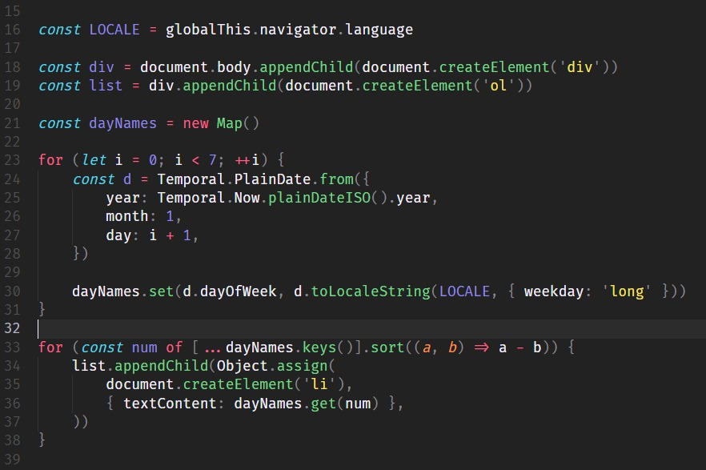

HTML
The HyperText Markup Language or HTML is the standard markup language for documents designed to be displayed in a web browser. It defines the content and structure of web content. It is often assisted by technologies such as Cascading Style Sheets (CSS) and scripting languages such as JavaScript.
Web browsers receive HTML documents from a web server or from local storage and render the documents into multimedia web pages. HTML describes the structure of a web page semantically and originally included cues for its appearance.
CSS
Cascading Style Sheets (CSS) is a style sheet language used for specifying the presentation and styling of a document written in a markup language such as HTML or XML (including XML dialects such as SVG, MathML or XHTML).[1] CSS is a cornerstone technology of the World Wide Web, alongside HTML and JavaScript.
The name cascading comes from the specified priority scheme todetermine which style rule applies if more than one rulematches a particular element. This cascading priority scheme ispredictable.
JavaScript
JavaScript (/ˈdʒɑːvəskrɪpt/), often abbreviated as JS, is a programming language and core technology of the World Wide Web, alongside HTML and CSS. As of 2023, 98.7% of websites use JavaScript on the client side for webpage behavior,[10] often incorporating third-party libraries. All major web browsers have a dedicated JavaScript engine to execute the code on users' devices.
JavaScript is a high-level, often just-in-time compiledlanguage that conforms to the ECMAScript standard.[11] It hasdynamic typing, prototype-based object-orientation, andfirst-class functions. It is multi-paradigm, supportingevent-driven, functional, and imperative programming styles. Ithas application programming interfaces (APIs) for working withtext, dates, regular expressions, standard data structures, andthe Document Object Model (DOM).
